The advent of a new generation of instruments and telescopes is enabling us to investigate how galaxies like our Milky Way form and evolve
by tracing the chemical and dynamical fingerprints of their stars. By decoding this fossil record imprinted in stars through high-resolution
spectroscopy and cosmological simulations, we can reveal how galaxies assemble and enrich themselves with heavy elements.
I am undertaking research built around three complementary but tightly interlinked themes, with stellar spectroscopy as their unifying thread.
Together they form a coherent vision to connect the physics of stars with the formation of galaxies and the origin of elements, and to apply
the same analytical and data-driven tools that power astrophysics to broader scientific and educational frontiers.
-
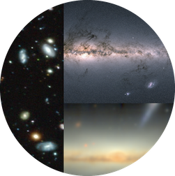
1) Galaxy evolution via the Milky Way and its analogues
Connecting signatures in stellar measurements to their origins via cosmological simulations, to uncover how stellar discs form and evolve.
-
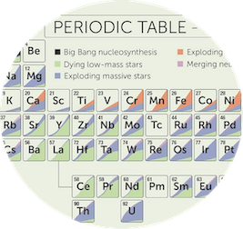
2) The origin of elements
Mapping nucleosynthetic pathways via high-precision stellar spectroscopy with the Veloce spectrograph, providing a proof of concept for ESO's proposed VLT instrument
HRMOS.
-
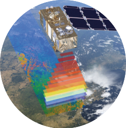
3) Spectroscopy across disciplines
Developing spectroscopic methods to bridge wavelength domains and foster interdisciplinary research and teaching.
Theme 1: Galaxy evolution via the Milky Way and its analogues.
How did galaxies like our Milky Way build their discs and sustain star formation across cosmic time? This remains one of the central open questions in galaxy formation.
While evidence points to early turbulent star formation, bar-driven evolution, and merger-induced heating, their interplay is still not understood.
My research aims to quantify how these processes shaped the Milky Way and its analogues by combining resolved chemodynamical data, extragalactic surveys,
and cosmological simulations in a unified framework.
-
(1a) The impact of mergers on disc galaxies.
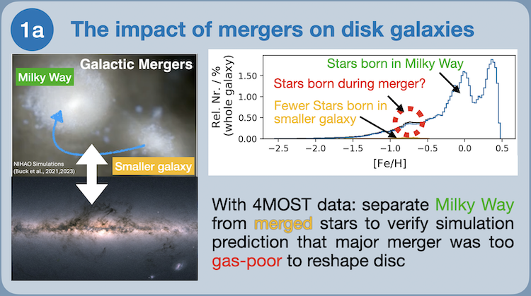
My earlier work showed that the Milky Way's last major merger was likely not gas-rich enough to rebuild the disc, as only a small population of stars shares its distinct chemistry.
I will map the inner Galaxy in elemental detail to test how mergers shaped its structure and enrichment history. These data will also prepare the ground for future facilities such as
VLT-MAVIS and
ELT-MOSAIC, extending these studies to external galaxies.
-
(1b) Chemical evolution of smaller galaxies.
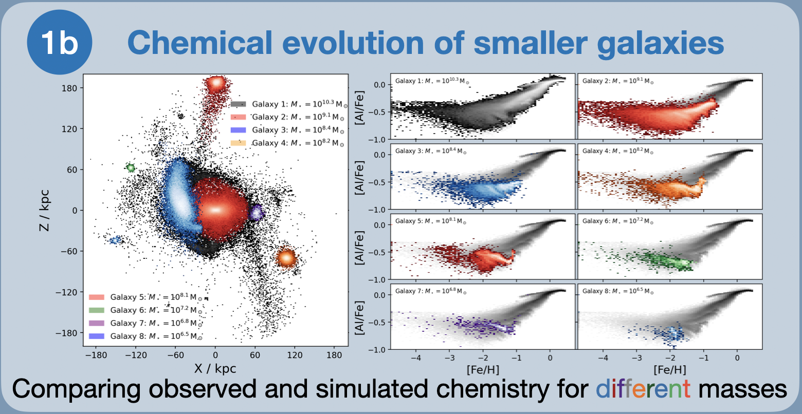
My PhD student Anell Cornejo Cárdenas
(completion expected 2028) is extracting dwarf galaxy chemistry from
MUSE spectroscopy.
Together with high-resolution NIHAO-UHD simulations, we will link the chemical evolution
of these dwarfs to their role as the building blocks of the Milky Way halo and assess how unique our Galaxy's merger history has been.
-
(1c) Bridging (extra-)galactic archaeology.
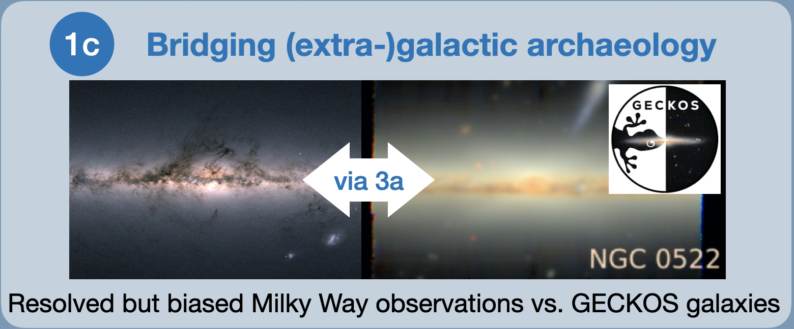
As part of the GECKOS
VLT-MUSE survey
(van de Sande et al. 2023),
we will apply the integrated-spectroscopy methods I am developing under Theme 3a to trace enrichment histories across multiple elements.
We will compare the Milky Way's resolved but locally biased view of chemical evolution with edge-on disc galaxies observed via integrated light.
Moving beyond metallicity, this complementary perspective will reduce biases in inferring the processes that govern disc formation across environments
and help interpret the Milky Way in a cosmological context.
These efforts will deliver observation-driven simulation tests linking merger history, satellite evolution, and disc formation.
Theme 2: The origin of elements.
Where and how are the elements forged? While most elements are now known to originate in stars or their explosions and mergers, major uncertainties remain in how stellar yields and
binary evolution shaped the chemical makeup of the Universe throughout cosmic time. This question links every scale of astrophysics from planets to galaxies, and demands both
precision spectroscopy and predictive modelling.
My research combines data-driven analysis with theoretical insight to address these gaps, and complements 3D NLTE modelling efforts
(Lind & Amarsi 2024).
These approaches provide the dual foundations of precision and realism that are needed to map how stars create and recycle the elements that shape planets and galaxies.
-
(2a) Quantify elemental and isotopic variations with unprecedented precision.
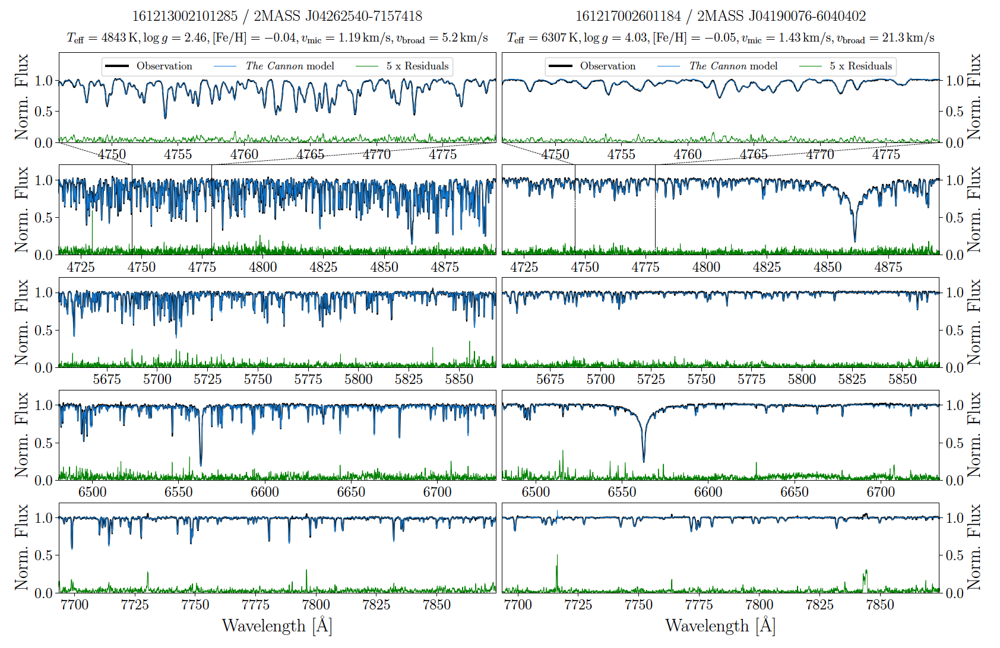
As PI of the ongoing GALAH-2 Large Program, I will deliver 0.01 dex precision for elemental and isotopic abundances using the Veloce spectrograph at the 3.9m Anglo-Australian Telescope,
with dedicated observing time secured through 2027. This programme complements observations of the original GALAH survey and provides early high-precision benchmark measurements for ESO's proposed
HRMOS concept to test models of internal mixing, stellar mass loss, and the relative contributions of massive versus evolved stars,
in order to constrain elemental production sites and yields.
-
(2b) Identify signatures of binary evolution and mixing.
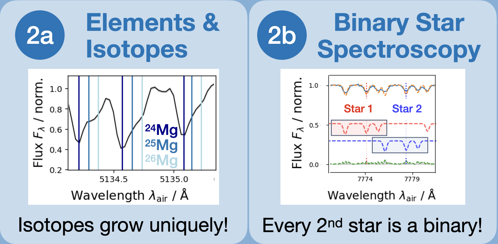
Every second star is part of a binary system. The work of my PhD student Yani Lach (expected completion 2028) on extracting
elemental abundances from binary star spectroscopy will quantify how binary evolution, interaction, and rotation alter surface abundances. The comparison of abundance patterns between closer and wider systems
will quantify the importance of binarity for chemical evolution.
-
(2c) Map element-production channels.
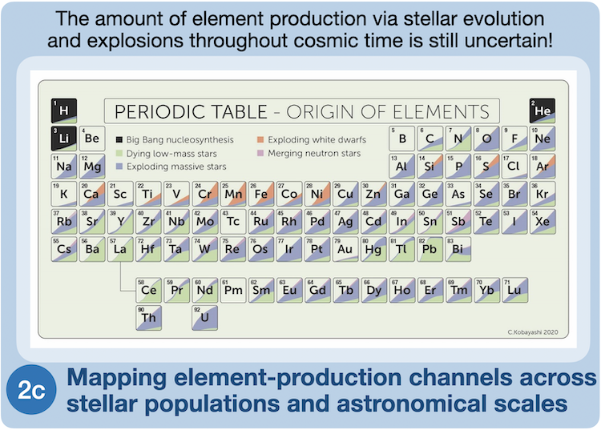
By combining high-precision abundances with chemical evolution models, my collaborators and I will extract nucleosynthetic fingerprints from stellar and galactic abundance measurements using our fast,
simulation-based inference framework (Buck et al. 2025).
By combining Veloce's precision with HRMOS-era reach and linking stellar spectroscopy to the formation of planets and galaxies, this theme is driving future key projects on the origin of the elements.
Theme 3: Spectroscopy across disciplines.
Where else can the tools we develop for stellar spectroscopy be applied to benefit science and society? Spectroscopy is a universal diagnostic of matter:
the same principles that reveal the composition of stars can illuminate processes in galaxies, the interstellar medium, and even Earth's environment.
This theme extends spectroscopy across wavelengths and disciplines to connect astrophysics, climate science, and education.
-
(3a) From resolved to integrated spectroscopy.
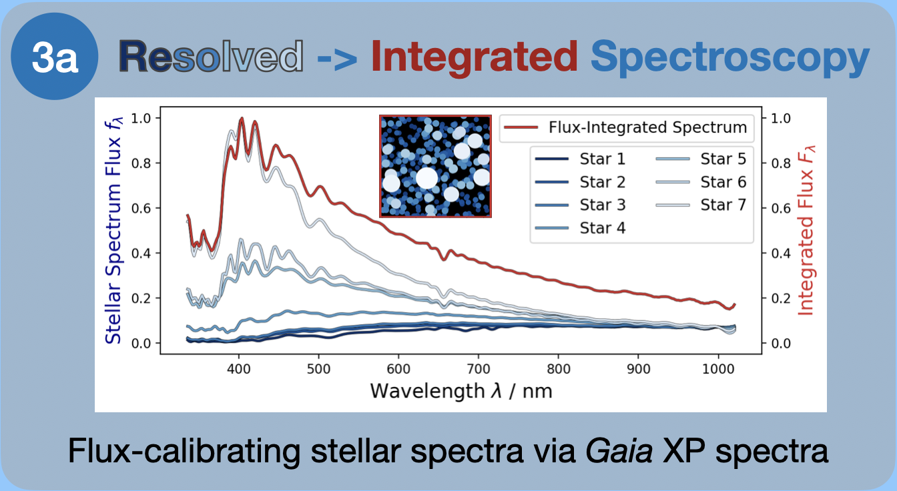
A key step toward bridging Galactic and extragalactic astronomy is translating high-fidelity stellar spectroscopy into integrated-light observations.
With collaborators and a postdoctoral researcher, I will develop a library of stellar-population templates from Milky Way spectra flux-calibrated with
Gaia XP data.
These abundance-variable templates will support analyses of integrated spectra from instruments such as
VLT-MUSE and
VLT-MAVIS, overcoming long-standing limitations in population-synthesis models and uniting stellar and extragalactic spectroscopy.
-
(3b) Multi-wavelength and multi-domain astronomy.
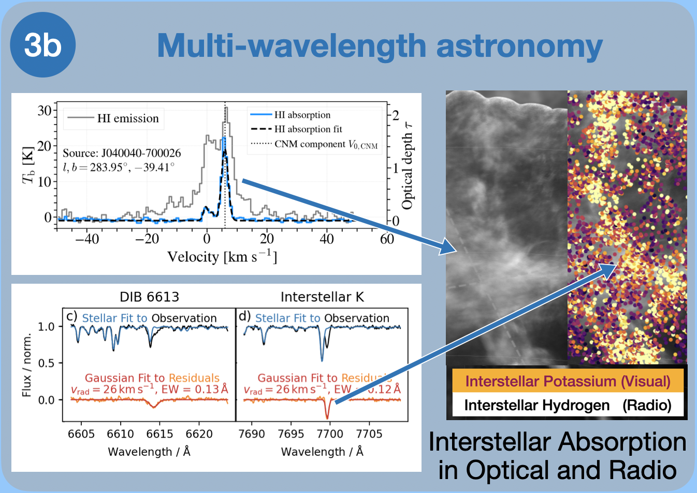
In a pilot project combining GALAH optical spectroscopy with ASKAP radio observations
(Nguyen, Buder et al. 2025),
I demonstrated that cross-wavelength analysis can map the interstellar medium across density regimes.
Building on this, I will expand collaborations with radio astronomers to link atomic and molecular gas phases in the Milky Way using targeted optical spectroscopy.
This work connects to upcoming large-scale surveys and prepares for the Square Kilometre Array by establishing a unified optical–radio view of the Galactic ecosystem.
-
(3c) Spectroscopy beyond astronomy.
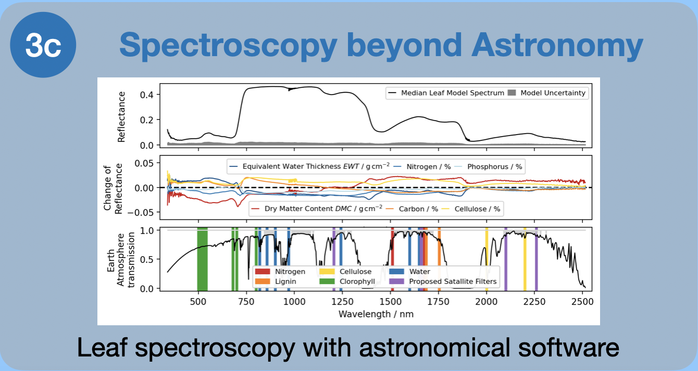
Together with environmental scientists and our instrumentation team at the ANU who build a wildfire risk monitoring satellite called
OzFuel,
we have shown that we can infer carbon and nitrogen abundances from leaf reflectance spectra by applying the data-driven stellar analysis framework of
The Cannon.
Extending this to indicators such as chlorophyll and pigment ratios will show how astronomical methods can address environmental and sustainability challenges.
My vision is to establish spectroscopy as a shared quantitative language across astronomy and environmental science, and to build a cross-disciplinary training platform where students
apply data-driven analysis across domains and develop end-to-end pipelines, from data collection to calibration, archiving, and reproducible analysis.
These efforts will turn spectroscopy from a specialised tool into a collaborative and educational framework for data-driven, cross-disciplinary research.